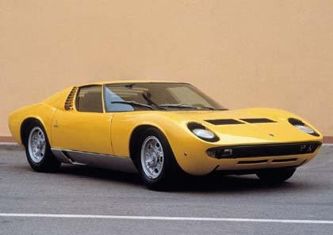
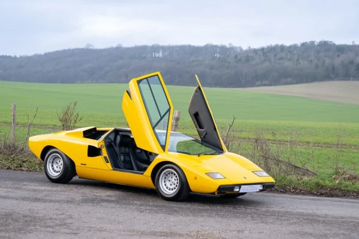
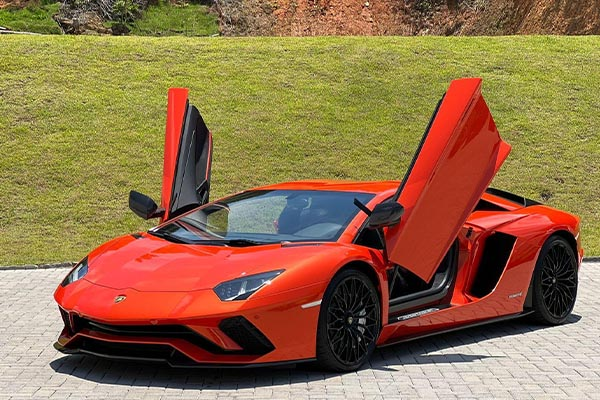
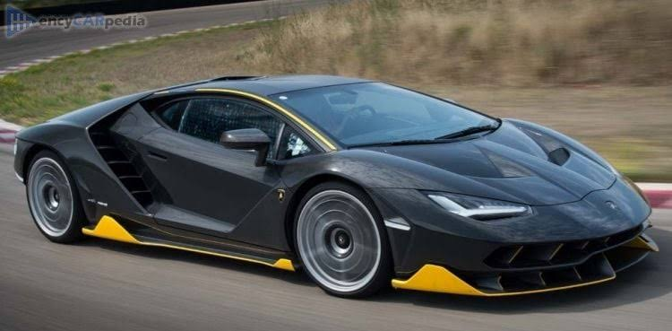
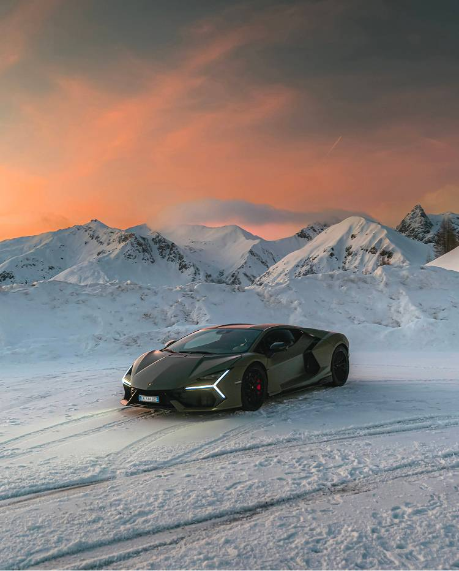

Automobili Lamborghini: Do Desafio à Lenda dos Supercarros
Fundação: 1963 | Origem: Sant'Agata Bolognese, Itália
A história da Lamborghini nasce de um dos episódios mais famosos do automobilismo: uma insatisfação do empresário Ferruccio Lamborghini com uma embreagem de sua Ferrari. Ao sugerir uma melhoria a Enzo Ferrari e receber uma resposta desdenhosa, Ferruccio decidiu construir seus próprios carros esportivos para provar que podia superá-lo.
1. O Início: O Primeiro Carro (350 GT)
Apresentado no Salão de Genebra, o Lamborghini 350 GT foi o primeiro automóvel de produção em série da marca. Equipado com um poderoso motor V12 de 3.5 litros, ele estabeleceu o padrão de sofisticação e alta performance que a fabricante buscava.
Curiosidade Técnica: O lendário V12 de Bizzarrini
O primeiro motor V12 da marca foi encomendado a Giotto Bizzarrini, ex-engenheiro da Ferrari. A arquitetura desse motor de 3.5 litros foi tão genial que serviu de base para os V12 da Lamborghini por quase 50 anos, equipando modelos lendários como o Miura, Countach, Diablo e Murciélago.

Vídeo demonstrativo do Lamborghini 350 GT:
2. O Divisor de Águas: Miura e Countach
Em 1966, a marca revelou o Lamborghini Miura, considerado por historiadores o primeiro "supercarro" do mundo por adotar a configuração de motor central-traseiro. Anos mais tarde, o Countach trouxe o design anguloso com portas no estilo "tesoura", definindo a identidade visual marcante da marca para sempre.


Curiosidade Histórica: A Aposentadoria de Ferruccio
O lançamento do Countach em 1974 marcou também a saída de Ferruccio Lamborghini da empresa. Enfrentando a crise global do petróleo dos anos 70, Ferruccio vendeu suas últimas ações e se dedicou à produção de vinhos no interior da Itália até sua morte em 1993.
3. A Era Moderna: Do Lendário Aventador ao Futuro Híbrido
Após a incorporação ao Grupo Volkswagen no final dos anos 1990 e os sucessos do Murciélago e do Gallardo, a Lamborghini alcançou o ápice de sua engenharia e design no século XXI com a linha Aventador.
3.1. A Era Aventador & Séries Comemorativas
Lançado em 2011, o Lamborghini Aventador redefiniu a categoria dos supercarros. Com chassi monocoque em fibra de carbono e um motor V12 de 6.5 litros aspirado inteiramente novo, o Aventador tornou-se o modelo V12 mais vendido e influente da história da fabricante italiana.
A plataforma do Aventador também deu origem a hypercars exclusivos em edições limitadas, como o espetacular Lamborghini Centenario (2016) — criado para celebrar o centenário do nascimento do fundador Ferruccio Lamborghini —, entregando 770 cv de potência e aerodinâmica ativa extrema.


Ouça o Motor V12 do Aventador (6.5L Aspirado):
3.2. Os Dias Atuais: O Futuro Híbrido com o Revuelto
Após mais de uma década de soberania do Aventador, a marca apresentou o seu sucessor: o Lamborghini Revuelto (2023). Ele combina a tradição do motor V12 aspirado a três motores elétricos (tecnologia PHEV), entregando mais de 1.000 cv e marcando a transição da casa de Sant'Agata Bolognese para a era da eletricidade sem perder a alma característica dos supercarros.

Curiosidade: O que significa HPEV?
A Lamborghini define o Revuelto não apenas como um híbrido comum (PHEV), mas como um HPEV (High Performance Electrified Vehicle ou Veículo Electrificado de Alta Performance). A bateria de íons de lítio fica posicionada no túnel central para manter a distribuição de peso perfeita do motor V12 central.